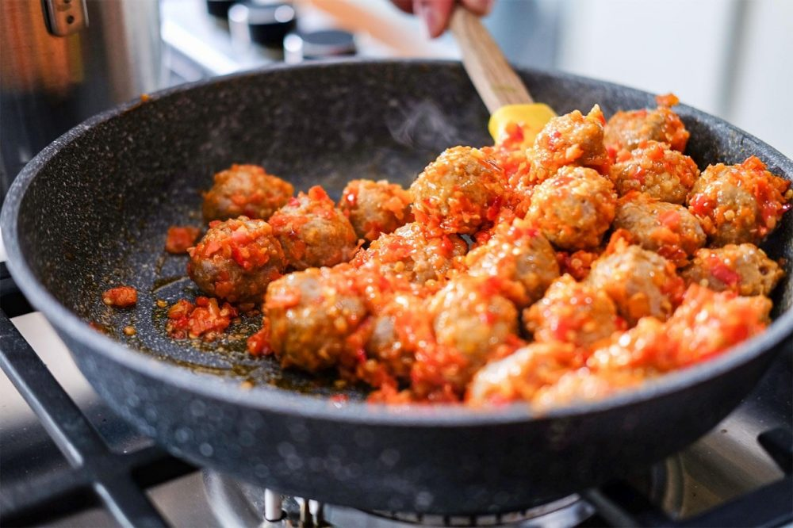

Bakso Mercon

Deskripsi
Bakso sering dijual dengan gerobak dorong di jalanan Indonesia, bersama dengan mie, tahu dan bahan lainnya. Bakso mempunyai arti bola daging dan Mercon berarti kembang api, artinya saya akan membuat hidangan bakso yang sangat pedas. Bakso Mercon sebenarnya adalah kreasi baru dalam hidangan bakso, dan kemudian menjadi ramai sebagai tren ASMR di YouTube juga. Ada 2 jenis Bakso Mercon; kering dan basah. Saya akan menunjukkan cara membuat versi kering. Kamu tentu saja bisa mengurangi cabai merah dan cabai rawit jika tidak terlalu tahan dengan rasa pedas.
Tingkat kesulitan: Mudah
Preparasi: 20 menit
Waktu memasak: 20 menit
Waktu membersihkan: 10 menit
Bahan-bahan (2 Porsi)
- 500g daging cincang (bagian lemak)
- 6 sdm tepung tapioka
- 2 sdm tepung
- garam dan merica secukupnya
- 1 siung bawang putih
- 1 es batu
- 40 buah cabai rawit merah
- 5 buah cabai merah keriting
- 4 siung bawang putih
- 1 sdm saus tomat
- 1 sdm saus cabai
- bubuk ayam secukupnya (opsional)
- minyak untuk menumis
Langkah-langkah
- Di dalam food processor, tambahkan daging cincang, tepung tapioka, tepung, bawang putih, garam, merica dan 1 kubus es batu.
- Aduk rata tapi jangan terlalu berlebihan (agar bakso tetap memiliki tekstur yang juicy).
- Bentuk adonan menjadi bola-bola. Kamu bisa menggunakan sendok es krim kecil atau hanya menggunakan tanganmu.
- Rebus bola daging tersebut di dalam air. Begitu mereka mulai mengapung, keluarkan dan biarkan dingin.
- Untuk sambalnya, haluskan semua bahan dan tumis hingga harum. Lalu, tambahkan bakso ke dalam sambal, kemudian tumis hingga merata.
- Hidangan siap untuk disajikan.
Sumber: Asian Food Network